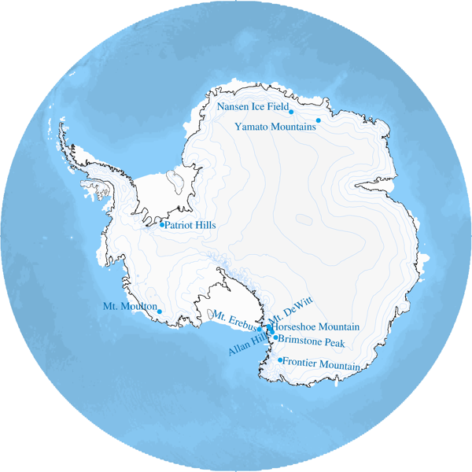

Antarctic tephra sites and Blue ice areas
Please select data set.
Site selected:
Map was made using GMT and GIMP software.
Grounding line and hydrostatic line locations for the Antarctic coastline and islands around Antarctica are from NSIDC data set created by Dr. Bindschadler. Rtopo dataset was used for Antarctic ice sheet topography and global bathymetry (Timmermann, R et al., 2010). Download unix bash shell scripts and data files that were used to make this map.